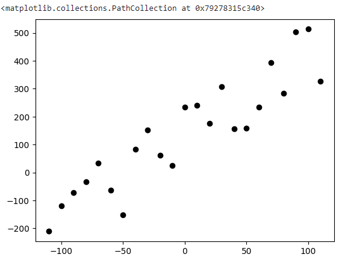
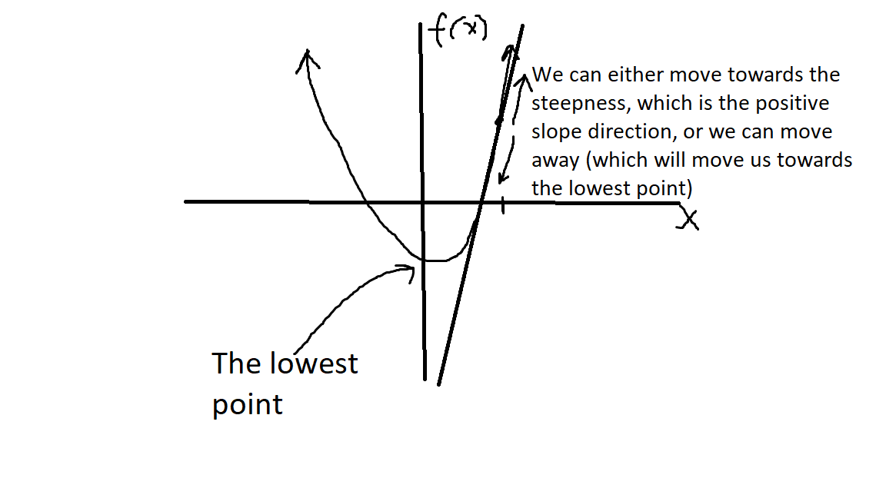

Gradient Descent & Linear Regression
In this post I will be introducing the math behind Gradient Descent and how it works!
I was first introduced to Gradient Descent when I had to implement autoregressive models from scratch. To learn this, I first tried to implement a Linear Regression.
Disclaimer: I will be using Python code in this tutorial found in my repo.
Please follow along, I think it helps to see an example. Or better yet, create your own script by using the code in this post.
Linear Regressions are brought up in the context of tring to find a line that best fits the trend of a data set. For example, lets say we wanted to find the line which best represents this graph:
import pandas as pd
import matplotlib.pyplot as plt
import random
x = [i for i in range(-110, 120, 10)]
y = [3*i-5 for i in x]
y = [i+(random.random()*250) for i in y]
df = pd.DataFrame({'a1': x, 'a2': y})
plt.scatter(df.a1, df.a2, color="black")

Well, we know that the final equation will look something like this:
y = mx + b
So all we have to do is find the appropriate values for m and b. While we could go the trial-and-error method and try a bunch of values until the result looks right, we could also have a computer automate that process for us.
Here is how the Linear Regression Algorithm works:
- Start with an initial line equation
- Calculate how far you are from the expected value when you plug in a point, using the current m and b.
- Then slightly adjust m and b in the direction which will get us closer to the expected value
- Repeat steps 2 and 3 for a specified amount (this is referred to as the epoch size)
First, start off with a random set of m (this is often referred to as the weight because is has a scaling affect) and b (which is referred to as the bias because it will shift, or apply a bias, to our line). For simplisity sake, we can also start off with m and b equaling zero.
m = 0
b = 0
Then we take our first point in the data set and plug it into our line equation. This should give us an output value. We can compare this with the expected value (since we know the point) by finding the error. Now, there are a variety of different error functions (referred to as the cost function, can you see why?) which can be used, and it will depend on your system. But for simplicity sake, I have chosen the Mean Squared Error cost function.
How does the Mean Squared Error Cost Function Work
So imagine we know the real value, say y_real. Then from some equation we get a computed value, say y_cal. We wish to know the error between these. The first thing that comes to mind is simply
error = y_real - y_cal
However, what if over time we got a bunch of negative and positive error values that when summed up (which will happen in our MeanSquaredError function because we will calculate the error across the entire dataset at once) would result in a value close to zero (the positive and negaitves would cancel)? This is where the squared term comes in. By squaring the error value, we eliminate the posability of a negative value.
error = (y_real - y_cal)**2
Next, we wish to know the error across the entire dataset, so the somewhat obvious method might be to take the average of all the errors between every point, this is the mean term.
So now our algorithm is something like this:
def mean_squared_error(m, b, points):
total_error = 0
for i in range (len(points)):
x_i = points.iloc[i].a1
y_i = points.iloc[i].a2
total_error += (y_i - (m*x_i+b))**2
return total_error/float(len(points)) #take the average
Here points is a Pandas DataFrame and I just access the x and y components. And when calculating the error, I just simply calculate the value on the spot with total_error += (y_i - (m*x_i+b))**2 ,adding it to a variable to then take the average.
Easy enough? If not, here is another resource: for help
Once we know our error, we wish to know how much we should adjust m and b according to this value. If we have a big error, maybe we should make a big change, but if it’s small, a tiny change might be sufficient.
This is when Gradient Descent comes in.
The underlining goal in the Linear Regression algorithm is to modify the weights and biases in such a way, that we get closer to our goal. But the question remains: How do we know how much we want to modify each value?
How does Gradient Descent Work
So let’s observe our cost function:
\[\text{error} = \sum_{i=0}^n (y_i - (m \cdot x_i + b))^2\]The first thing we wish to know, is how much our error will change with a small change in m. Then according to that value, we will adjust m to reduce our error. We then repeat this process for b.
And this is when something called Derivative comes in.
Now I wish I could go into great detail on how a derivative works and the theory behind it, but this post is already getting wordy, so reach out and let me know if you would like a seperate post on derivatives.
So essentially, what we are doing with the partial derivatives, is we are trying to calculate the slope of our cost function at a given point with respect to one of the variables, like either m or b (this is actually close to the definition of a partial derivative. We simply wish to know the effect a variable will have on the output).
And to do this (again, I won’t be going in-depth on partial derivatives in this tutorial) we are going to treat every variable other than the one we are interested in as a constant.
\[\frac{\partial \text{error}}{\partial m} = \lim_{h \to 0} \frac{f(x + h) - f(x)}{h}\]and
\[\frac{\partial \text{error}}{\partial b} = \lim_{h \to 0} \frac{f(x + h) - f(x)}{h}\](notice how these are very similar to slope equations, can you see why?)
which becomes
\[\frac{\partial \text{error}}{\partial m} = \lim_{h \to 0} \frac{\sum_{i=0}^n \left(y_i - \left((m + h) \cdot x_i + b\right)\right)^2 - \sum_{i=0}^n \left(y_i - (m \cdot x_i + b)\right)^2}{h}\]and
\[\frac{\partial \text{error}}{\partial b} = \lim_{h \to 0} \frac{(\sum_{i=0}^n (y_i - (m \cdot x_i + (b+h)))^2) - (\sum_{i=0}^n (y_i - (m \cdot x_i + b))^2)}{h}\]And once we do the algebra (which I highly suggest you do by hand to really understand), we are left with these two equations:
\[\frac{\partial \text{error}}{\partial m} = -\frac{2}{n} \cdot \sum_{i=0}^n (y_i \cdot x_i - x_i^2 \cdot m + x_i \cdot b)\]and
\[\frac{\partial \text{error}}{\partial b} = -\frac{2}{n} \cdot \sum_{i=0}^n (y_i - m \cdot x_i - b)\]Voila!
Now we know the effect m and b will have on our error. And all we have to do is adjust m and b in such a way that we will have reduced our error.
Now for simplisicty sake, I want you to imagine this: let’s say we graphed our cost function and we found the slope of the tangent line at a given point (our derivative). We can find the lowest point (or the lowest our cost function is) if we move away from the steepness or the slope.
So here is a super quick sketch:

Now all we have to do is adjust m and b in the opposite direction of the steepness, which we do by subtracting our gradient times some learning rate. All the learning rate does, is it scales the amount which we will adjust m and b to a much smaller value so we don’t make big jumps; we make small, incremental, adjustments. But this is just another parameter you can adjust for your problem.
\[\text{m} = \text{m} - \alpha \cdot \frac{\partial \text{error}}{\partial m}\] \[\text{b} = \text{b} - \alpha \cdot \frac{\partial \text{error}}{\partial b}\]Here, $\alpha$ is my learning rate, and in the code below, it’s set to 0.0001
So here is my Python function for doing this Gradient Descent:
def gradient_descent(m_now, b_now, points, L):
m_gradient = 0
b_gradient = 0
n = len(points)
for i in range(n):
x_i = points.iloc[i].a1
y_i = points.iloc[i].a2
m_gradient += -(2/n) *x_i*(y_i-(m_now*x_i+b_now))
b_gradient += -(2/n) *(y_i-(m_now*x_i+b_now))
m = m_now - m_gradient * L
b = b_now - b_gradient * L
return m, b
and this is the code where the Linear Regression and Gradient Descent happens:
m = 0
b = 0
L = 0.0001
epoch = 200
for i in range(epoch):
m, b = gradient_descent(m, b, df, L)
Here, I set the epochs (which is how many times we update m and b) to 200. You can play around with these values (epoch and L), they are the hyperparameters.
In each epoch, we update m and b, and re-run our algorithm; each time getting closer and closer to the actual m and b values.
If you went to the repo and ran the cell, you should see something like this:

And if you print out the m and b values, you should get something close to
\(\text{m} = 3.074\) \(\text{b} = 4.314\)
Which is really close to our actual m and b, which was defined as m = 3 and b = 5.
Where is Linear Regression Useful
Well, Linear Regression is actually the simpliest Machine Learning model. We created an algorithm that learns a set of variables. This fundamental idea is used in Neural Networks. In fact, each neuron in the network behaves similar to a Linear Regression. Each neuron learns a set of weights and biases, similar to how we learned a set of m and b.
I hope you learned something, and don’t be afraid to reach out with suggestions and questions!!
See you next time!
Subscribe to Burak Ayyorgun
Get the latest posts delivered right to your inbox